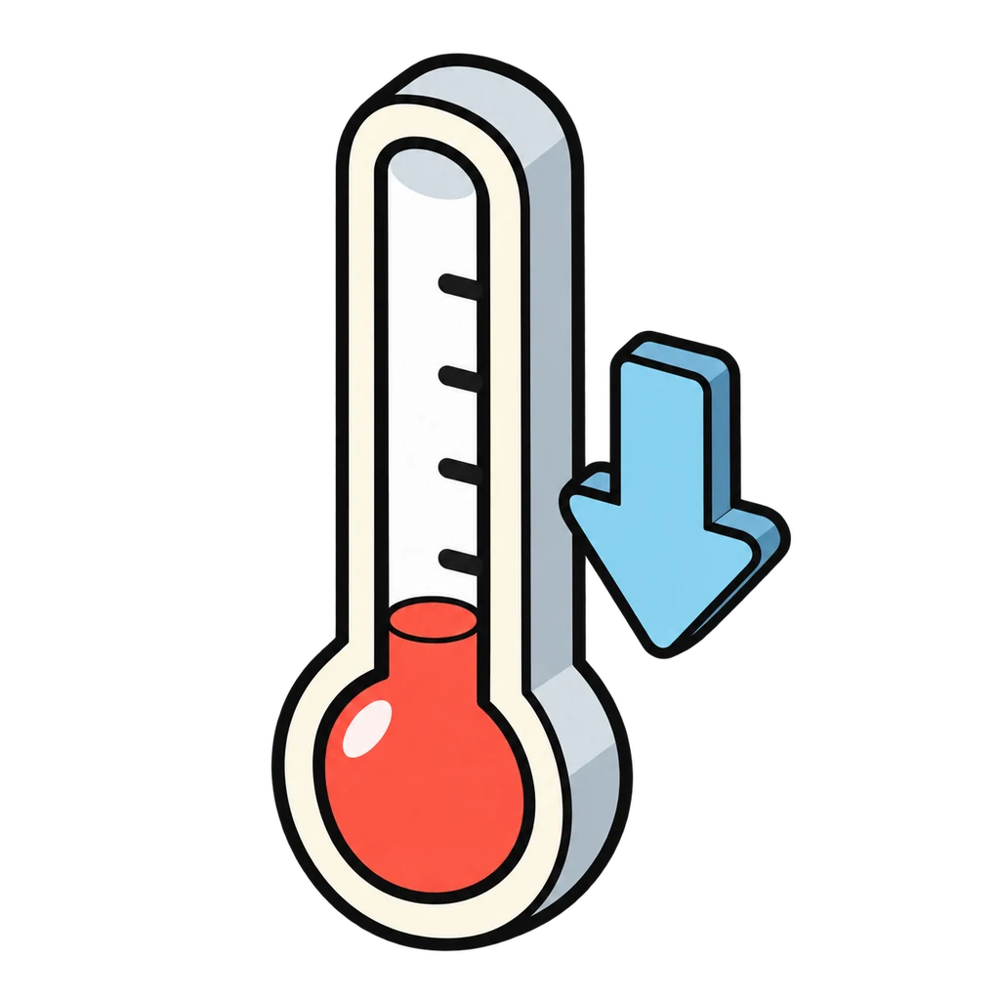
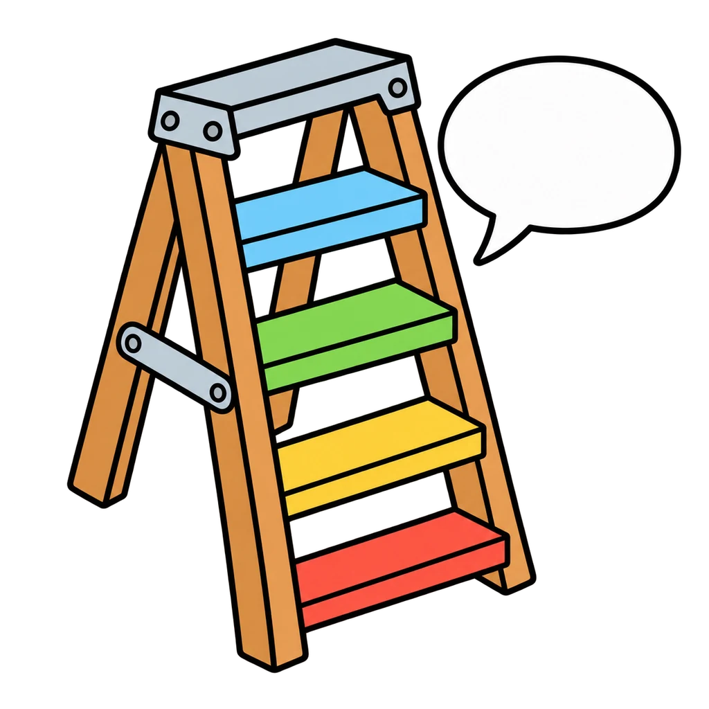
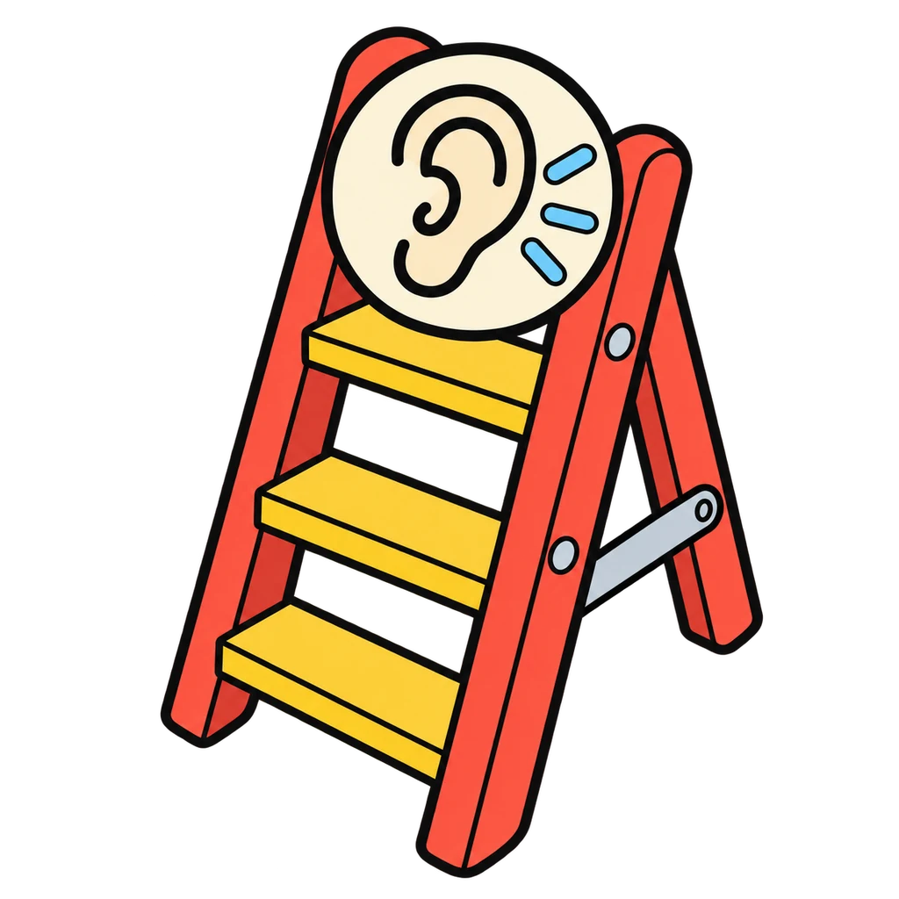
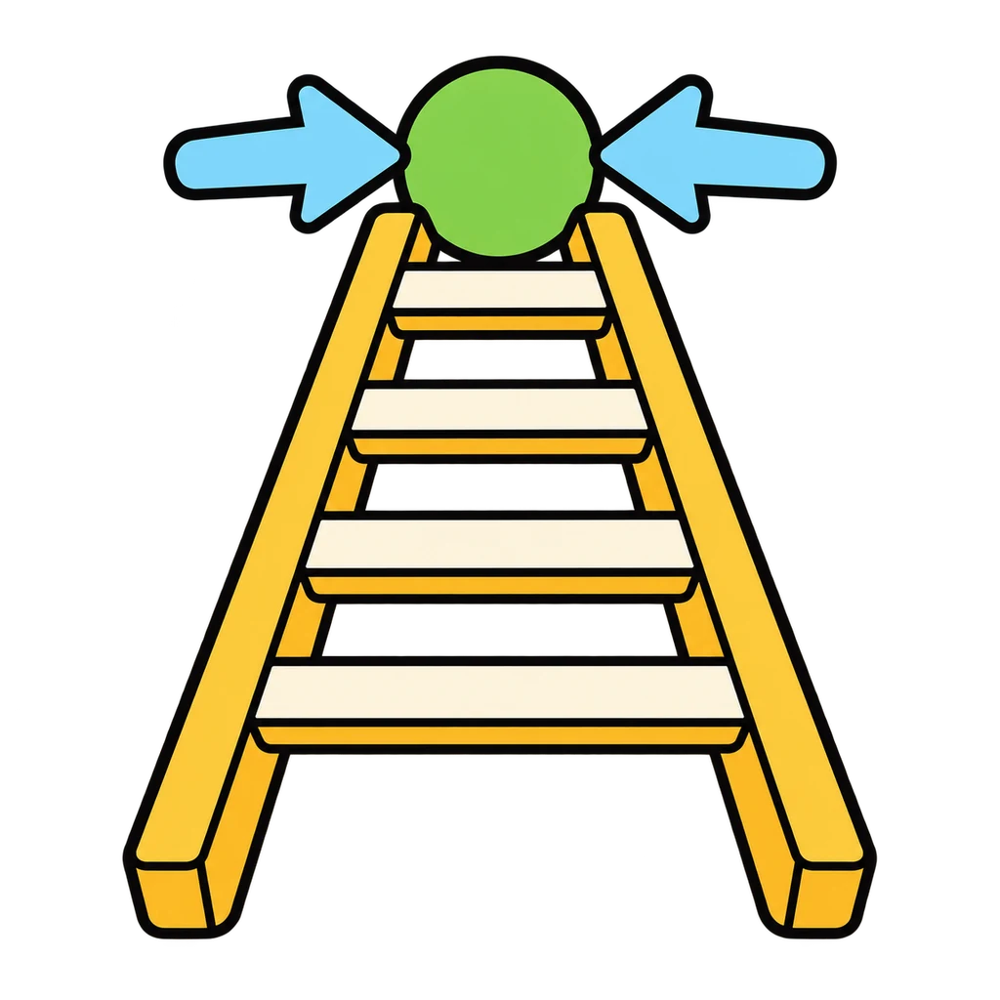
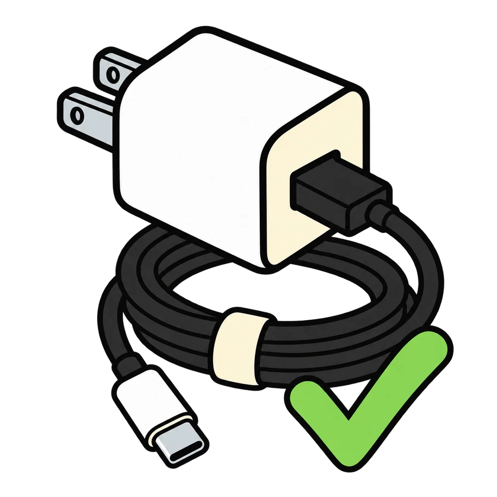

Reviews Lesson 3.11. Conflict Ladder reviews Lesson 3.11: the escalation ladder, the five steps in order, the three repair steps, and which rung a scenario is on. Use it as the Day 2 do now (the lesson already asks for the five steps from memory) or as review for Unit 3 Test items 11 and 13, and before the Communication Performance Task in Lesson 3.13. Round 2 uses eight of the handout's scenario cards with the teacher key's rung, cause, and shared want in the feedback; scenario 8 (report only) and scenario 10 (keyed rung 2 to 3) are not in the game. The rung 5 bin carries the handout's line that it is not yours to handle alone, and the end panel lists the adults.

Conflict Ladder
The five steps for managing a conflict appear shuffled. Tap them into order, then the three repair steps. Then a scenario appears, and you tap the rung of the ladder it is on.
How to play
- Prevention is stepping off at rung 1: ask instead of grab; say it before it grows.
- Everything above rung 4 is not yours to handle alone. Telling is not tattling. Tattling is trying to get someone in trouble. Telling is trying to get someone safe.





Done
The ones to study:
Worth knowing by heart:
- The escalation ladder, rung 1 to rung 5 (Handout 03.11 Part 1)
- The five steps: cool down, I-message, listen, find the shared want, agree on one step (Part 2)
- The three repair steps: apologize, make it right, move on (Part 5)
- Rung 5 is not yours to handle alone: a parent or guardian, the teacher, the counselor, the dean, any teacher (Part 6)